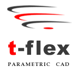

|
 T-FLEX
Parametric CAD, Top Systems tarafýndan geliþtirilen, imalatçýlarýn
ve mühendislik ekiplerinin ürünlerini daha hýzlý, daha yüksek
kalitede vedaha ucuza geliþtirmelerini saðlayan, kendine has
parametrik mekanizmalarla destekli gücü üretimde kanýtlanmýþ
Parasolid tabanlý bir 3D modelleme ve 2D taslaklama yazýlýmýdýr.
T-Flex Microsoft ® Windows ® NT, 2000, and XP iþletim sistemleri
için hazýrlanmýþtýr ve dünya çapýnda bir kaç dilde kullanýcýlara
sunulmaktadýr. T-FLEX
Parametric CAD, Top Systems tarafýndan geliþtirilen, imalatçýlarýn
ve mühendislik ekiplerinin ürünlerini daha hýzlý, daha yüksek
kalitede vedaha ucuza geliþtirmelerini saðlayan, kendine has
parametrik mekanizmalarla destekli gücü üretimde kanýtlanmýþ
Parasolid tabanlý bir 3D modelleme ve 2D taslaklama yazýlýmýdýr.
T-Flex Microsoft ® Windows ® NT, 2000, and XP iþletim sistemleri
için hazýrlanmýþtýr ve dünya çapýnda bir kaç dilde kullanýcýlara
sunulmaktadýr.
T-FLEX
Parametric CAD 8.0 müþteriler tarafýndan istenen 300 den fazla
yeni özelliði, performans da önemli bir artýþý, geliþtirilmiþ
bir kullanýcý arayüzünü, kompleks modeller ve geniþ çaplý
montajlar için optimizasyonu içeriyor. Programýn üstün 2D
taslak ve 3D modelleme de parametrik özellikleri, herhangi
bir ürün geliþtirmesini ve diðer tasarým iþlemlerinin piyasadaki
diðer orta-seviye fiyatlý CAD sistemlerinden çok daha hýzlý
yapmasýný saðlýyor.
ÜRETKENLÝK GELÝÞTÝRMELERÝ;
Yukardan
aþaðý ve aþaðýdan yukarý montaj modellemeleri bir çok yönden
geliþtirildi. Parametrik konfigurasyonlarýnýn mekanizmasý
yeni isimlendirme sistemi ile basitleþtirildi. Montaj zip
lenmesi, montajý diðer dosya sistemlerine taþýrken çok daha
az efor harcamanýzý saðlar. Selection mekanizmasý bir kaç
tane heterojen nesnenin ayný anda iþletilmesine izin verir.
Yeni dialog lar, kullanýcý seçimlerini saklar, ve tam bir
tasarým þeffaflýðý saðlar. Yüksek seviye kiþiselleþtirme olanaklarý
kullanýcýya rahatlýk saðlar. T-FLEX artýk 3 GB hafýza ile
çalýþabilir böylece kullanýcýya büyük tasarýmlarý daha hýzlý
yapmasýný saðlar.
GELÝÞMÝÞ PARÇA MODELLEMESÝ ve AKILLI OBJE MANTIÐI;
T-FLEX Parametric CAD 8.0 modelleme operasyonlarý için girilen
inputlarý belirtirken oluþan rigidity'i yok eden devrimsel
bir teknik içerir. Geliþmiþ, "face to face" "three
face" özellikleri içeren "blending" kabiliyetleri
komleks þekiller tasarlaken maximum esneklik saðlar. 2 boyutlu
"array"ler bir çok tasarým durumunda adresleme sorununa
yardým eder. Sac metal tasarýmý hýzlý model geliþtirme için
bol miktarda yeni yardýmcýlar ve önceden belirlenmiþ elementler
sunar. Geliþmiþ "loft" özelliði katý ve yüzey "loft"larý
için optimize edilmiþtir. Dokunduðunuz objenin katý mý veya
surface mi oluþumunu kendisi karar verir.
CANLI OBJESEL ÇÝZÝM GELÝÞTÝRMELERÝ;
Canlý
2D objeden 3D TASARIM (yeni): Top Systems, T-FLEX Parametric
CAD ile dünyanýn en iyi paremetrik taslak araçlarýný sunmaya
devam ediyor. Yapýþkanlýk artýk daima iþler durumda. LineStyles
ve Hatching Pattern leri artýk kiþiselleþtirilebilir. Geliþtirilmiþ
parametrik BoM özelliði standart veya özel tablolarýn Tflex
içinde çoklu-sayfalar halinde desteklenmesini saðlýyor.
KULLANICI
ARABÝRÝMÝ;
Dinamik
çekici çizgileri mouse unuz ile doðal bir 3D tasarýmý yapmanýzý
saðlar. Renkler, daha akýcý ve sezgisel bir operasyon iþleyiþi
için daha çok kullanýlýyor. Model aðacý, modelinizin yapýsý
hakkýnda zengin bilgiler sunuyor. T-FLEX Parametric CAD, Windows
ile daha fazla entegre olarak standart iþlemlerin bildiðiniz
yöntemlerle yapýlmalarýný saðlýyor. Yeni kiþiselleþtirilebilir
dialoglar çalýþma alanýnýzý daha esnek ve uygun bir þekilde
ayarlamanýzý saðlýyor. Yeni bazý pencere nesneleri göze daha
hoþkýlacak bir þekilde düzenlendi ve daha hýzlý grafik iþleme
yeteneði ile birleþince size daha tatmin edici bir çalýþma
sistemi sunuyor. SpaceMouse/Spaceball hareket kontrollerlerinin
desteklenmesi kullanýcýlarýn iki elleri ile bilgisayarlarýna
Tflex ile çalýþýrken daha hakim olmalarýný saðlýyor. Kýsaca
T-FLEX bir mühendislik harikasý..!
Sistem
içeriði;
Profesyonel
3D Melez Katý ve Yüzey Modelleme
Prametrik parasolid obje mantýðýnda modelleme.
TFLEX Kinamatics \ 2D \ 3D ayný anda
- Parametrik Ölçülendirme
Profesyonel Ýliþkilendirilmiþ Montaj
Desing Exlorer ve Ürün Aðacý ile geri dönüþüm sistemi
GD&T ve Bill of Materials
Yüzey ve Katý Analiz
TFLEX material\ Obje ve Materials tanýmlamalarý ile eþ zamanlý
döndürme
Profesyonel Casting, Plastics ve Sheet metal
Mechanical & Mold design
Ýliþkilendirilmiþ Photo-Realistic Rendering
TFLEX Simulator \ Animasyon ve simulasyon
TFLEX Toolbox\ Geniþletilebilir parametrik 3D Makine ve kalýp
Parçasý Kütüphanesi
Parametrik objesel 2D tasarým
2D den 3D ye parametrik geçiþ
Objeye malzeme tanýmlayarak tasarým imkaný
TFLEX utilities
TFLEX Docs\ profesyonel dokümantasyon kontrol gamlarý
- TFLEX Techno \ Teknolojik prototipleme
- Data Import (3D IGES (*.igs), AutoCAD DWG (*.dwg), AutoCAD
DXF(*.dxf), Parasolid Files (*.xmt_txt ; *.x_t ; *.x_b ; *.xmt_bin),
3D STEPAP203(*.stp ; *.step) Export ; Windows -Metafile (*.wmf),
Enhanced WindowsMetafile (*.emf), AutoCAD DXF (*.dxf), AutoCAD
DWG (*.dwg), T-FLEX Metafile(*.bmf), T-FLEX Metafile (vektor
hiddenline removal)-(*.bmf), StereoLithography (*.stl), AutoCAD
DXF 3D (*.dxf), Parasolid Files (*.xmt_txt ;*.x_t ; *.x_b
; *.xmt_bin), Bitmap Files (3D Image) (*.bmp), 3D IGES (*.igs)3DSTEP
AP203-(*.stp ; *.step), VRML 2.0 files (*.wrl), Inventor Files(*.iv),
POV-Ray Files (*.pov)
Parametrik Layer mantýðý ve diðerleri
Daha
fazla bilgi için: www.tflex.com
Ýrtibat:
3D
CAD/CAM TECHNOLOGY
Yalý yolu Sok. Ýsmail Ergin Ýþ Merkezi No: 56/A-4
Üstbostancý Kadýköy / Ýstanbul
Tel: (216) 380 32 88
Faks:
(216) 380 01 18
www.3dcadcam.com.tr
sales@3dcadcam.com.tr
|